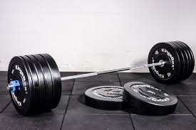

After my knee injury I took a break from playing sports my senior year and took a liking to weight lifting. It felt good to be in shape and I liked having something to do in my free time. I also really like wacthing movies and growing up I watch a lot of cinema ranging from comedies to thrillers and anytime and I can go to the movies I make an effort to see what's playing. Another hobby I enjoy is spending time with my friends, whether we stay in and play cards or go hiking it's always a good time with them.